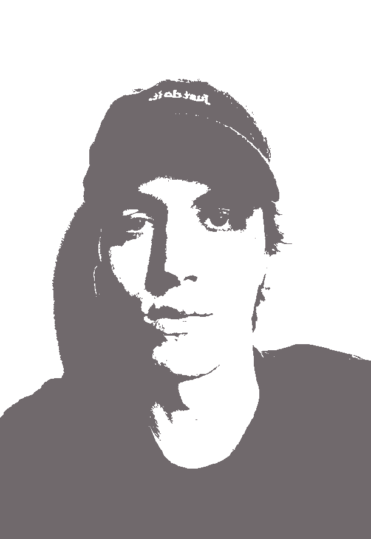

Freelance graphic and motion designer from Udine, based in Barcelona. After collaborating with studios in Northern Italy and Vienna on projects ranging from culture to the furniture industry, he is currently attending the Master in Applied AI for Design and Arts at Elisava. The practice focuses on typography, motion and digital arts, at the intersection of design and technology, combining conceptual research with an ongoing exploration of AI, interfaces and digital tools.
